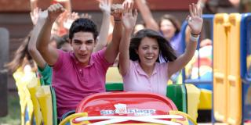
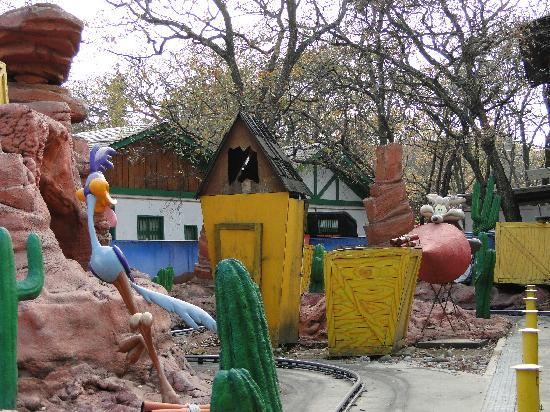
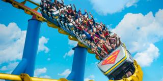
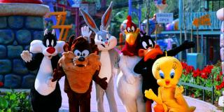

Con tanto para elegir en el mejor parque de diversiones de latinoamérica, ¿por dónde empiezas?. Hay increibles cosas para hacer es Six Flags, desde emocionantes motañas rusas, hasta juegos para niños. Hay diferentes espectáculos que puedes disfrutar. Come en uno de nuestros restaurantes y al final ¡no olvides llevar un souvenir para recordar el día!
FAMILIARES
 Las mamás, papás y niños pueden montar juntos en las atracciones.
INFANTILES
 El área infantil ya está abierta. ¡Te esperan atracciones nuevas!
X-TREMO
 Podrás encontrar las montañas rusas más intensas.
ESPECTACULOS
 Ven y disfruta de los espectáculos